{kind=link}
 Here are the parts of one server.
I've listed US prices from early March 2014
to give an idea of how the costs are divided among components.
The infrastructure mentioned above adds only a few percent to the total cost.
Here are the parts of one server.
I've listed US prices from early March 2014
to give an idea of how the costs are divided among components.
The infrastructure mentioned above adds only a few percent to the total cost.
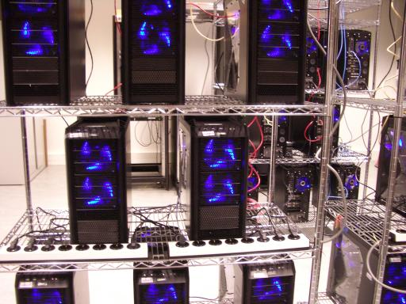 Saber is a powerful new computer cluster in the Cryptographic Implementations group in the Discrete Mathematics section of the Department of Mathematics and Computer Science at Technische Universiteit Eindhoven. Saber is also the Spanish word for "knowledge".
Saber consists of 24 servers featuring 48 high-end graphics cards. The university started by purchasing 2 test servers with slightly different components, and then in December 2013 purchased components for the remaining 22 servers from 4Launch. I'm happy to recommend 4Launch to other people purchasing computer parts in and around the Netherlands. Computers were assembled by Tanja Lange (6.25), Chitchanok Chuengsatiansup (5), Andreas Hülsing (3.25), Christine van Vredendaal (3), Tung Chou (2), and me (4.5). Initial configuration and installation were by Tung Chou (8), Christine van Vredendaal (3), Tanja Lange (2), Jan Willem Knopper (2), Chitchanok Chuengsatiansup (1), and me (8).
The servers are connected by a D-Link DGS-1210-48 switch. The 48 ports on this switch leave room for future expansion.
The servers occupy three metal wire racks purchased from BigDug (3x CS1266, 3x CXL126, 3x CCS). I'm pretty sure that the original manufacturer is Dong Guan Lijin Storage Equipment Company. Each rack has 4 casters (2 with brakes) holding 4 1800mm corner poles (each shipped as two half-height pieces), which in turn hold 5 adjustable 1220mm x 610mm wire shelves. The casters are rated for 80kg each, and the shelves in each rack weigh about 40kg, so each rack can hold 280kg. (Each shelf is rated for 250kg uniformly distributed.) One advantage of wire shelves over solid shelves is that wire shelves don't block air flow; another advantage is that wire shelves allow cables, twist ties, etc. to be attached anywhere.
Each rack has 8 servers (about 160kg in total): 3 servers on shelf 1, 2 servers on shelf 2, and 3 servers on shelf 3, spaced so that air can flow freely up from the top fan on each server. The corner poles have a notch every inch (2.54cm) for placing the shelves. Shelf 2 is 21 inches higher than shelf 1; shelf 3 is 21 inches higher than shelf 2; shelf 4 is 21 inches higher than shelf 3; shelf 5, the top of the rack, is 6 inches higher than shelf 4. One rack has the switch on shelf 4. Shelf 5 is for future expansion. The racks were assembled by Tung Chou, Chitchanok Chuengsatiansup, Tanja Lange, and me.
The cluster is powered by 6 16A 230V circuits, balanced between three power phases. Each rack has 2 circuits, with 4 servers on each circuit.
Here are the parts of one server.
I've listed US prices from early March 2014
to give an idea of how the costs are divided among components.
The infrastructure mentioned above adds only a few percent to the total cost.
Graphics cards: 2x Asus 90YV04H0-M0NA00 "GTX780-DC2OC-3GD5" (2x $520 from NewEgg). 3-year warranty from Asus. These aren't supposed to draw more than 250 watts each, but online I've seen measurements of them drawing 268 watts.
These graphics cards contain most of the computational power of Saber. Each card has a 0.889GHz GK110 GPU containing 2304 single-precision multipliers. (NVIDIA misleadingly refers to these multipliers as "cores" even though it arranges the multipliers into larger units that sensible people would call cores. For comparison, each Intel Haswell core contains 16 single-precision multipliers, and each 2-core AMD Piledriver module contains 16 single-precision multipliers.) One GPU performs almost 241 multiplications per second; 48 GPUs perform almost 1.5*246 multiplications per second, while consuming about 12000 watts; in a year 48 GPUs perform about 1.3*271 multiplications while consuming about 12000 watt-years (380 gigajoules) of electricity.
There are several manufacturers of cards containing the same NVIDIA GK110 GPU. These Asus cards have impressive heat sinks (marketing name: "Direct Copper II") and are reported to run at lower temperatures than other cards even though they are clocked slightly higher from the factory.
CPU: AMD FD8350FRHKBOX ($200 from NewEgg). FX-8350 Vishera 4.0GHz CPU, Socket AM3+. Four Piledriver modules, each with 2 cores. 3-year warranty from AMD. 125 watts.
One of the test servers used an Intel CPU, specifically the Xeon E3-1275 v3 (Haswell) on an Asus P9D WS motherboard. It's not a bad machine, and for some tasks it's faster than the FX-8350; but the Xeon E3-1275 v3 is $150 more expensive than the FX-8350, and the motherboard is $60 more expensive than the motherboard below. This is more than a 15% increase in the cost of non-GPU components, and it certainly doesn't produce a 15% increase in the overall performance of those components. There are Intel CPUs and motherboards at lower costs, but as far as I know none of those support ECC. (Intel also keeps changing its ECC interfaces, and this test server will need an OS upgrade before the OS can monitor the hardware ECC, whereas AMD has maintained the same ECC interface for years.)
Motherboard: Asus SABERTOOTH 990FX R2.0 ($180 from NewEgg). Socket AM3+ motherboard, 4 DIMM slots, AMD 990FX chipset. 5-year warranty from Asus. Maybe 50 watts?
RAM: Kingston KVR16E11K4/32 ($381 from NewEgg). This is a pack of 4 DIMMs (same as 4 copies of KVR16E11/8 except for the packaging). Each DIMM has 8GB unbuffered ECC RAM, for a total of 32GB. Lifetime warranty from Kingston. 4*2.9 watts.
Hard drives: Western Digital WD20EURX ($100 from NewEgg) and Seagate ST2000VM003 ($100 from NewEgg). These are two 2TB SATA drives. 3-year warranties from Western Digital and Seagate respectively. Estimated 15-watt spinup and 24-watt spinup respectively; once spun up, 4.4-watt "average" and 5-watt "average" respectively.
Both of these are sold as "video surveillance recording" drives, evidently optimized for long continuous use rather than for fast seeks. I use the two disks to store 2TB in RAID1, and I use two different manufacturers on the theory that the two drives will then be less likely to fail simultaneously. 3TB drives are now slightly less expensive per byte, but they have considerably worse OS support (they need GPT rather than MBR), and I don't expect 2TB to really limit the applicability of the cluster.
Case: Antec 0-761345-15924-1 "Nine Hundred Two v3" ($134 from some random store). Four fans included. 3-year warranty from Antec.
Extra fans: 2x Antec 0-761345-75120-9 "Tricool 120mm" (2*$7 from Amazon). 1-year warranty from Antec.
One of these is to install, one to keep as spare. Antec 0-761345-75121-6 "Tricool 120mm DBB" has double ball bearings and presumably would last longer.
Power supply: Seasonic P-1000 ($279 from Amazon). 1000-watt power supply. 7-year warranty from Seasonic.
A computer that draws N watts from its power supply will draw more than N watts from the wall, because the power supply itself consumes power. More efficient power supplies consume less power, generate less heat, and hopefully last longer. This particular power supply is more than 90% efficient at typical loads.
It's easy to argue that 850 watts would have been sufficient. I don't currently plan to add any components, and I'm pretty sure that the existing components can't draw more than 800 watts from the power supply (i.e., 890 from the wall) if I don't overclock the graphics cards. It's also not clear that the temperature limits on the graphics cards will allow noticeable amounts of overclocking, despite the Asus heat sinks. Furthermore, lower clock speeds are probably better for longevity.
 Here are the steps that we used to assemble one server.
Caveat lector:
I'm not going to explain basic electrical and physical protections,
either for you or for the components.
On the other hand,
MegaTokyo has some useful advice.
Here are the steps that we used to assemble one server.
Caveat lector:
I'm not going to explain basic electrical and physical protections,
either for you or for the components.
On the other hand,
MegaTokyo has some useful advice.

Starting on the case. 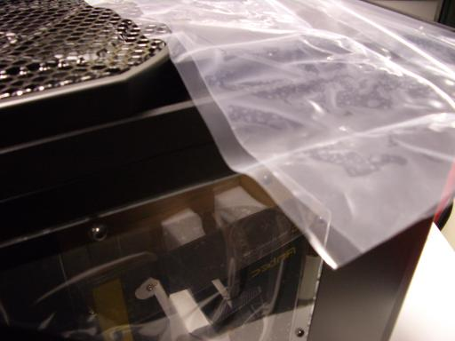 Take the case out of its box. Remove and discard plastic wrap from the window side.
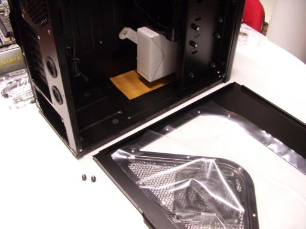 Unscrew the side and put the side down.
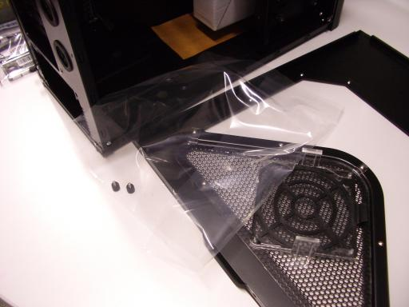 Remove and discard inner plastic wrap from the side.
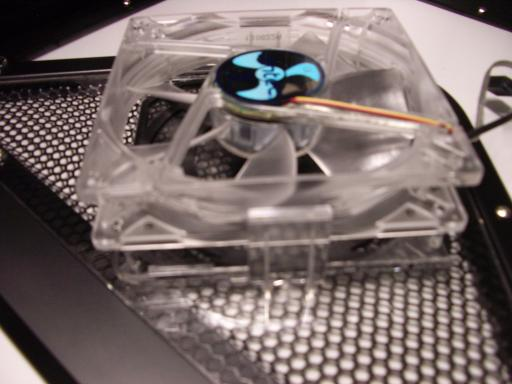 Extra case fan. Take an extra fan out of its box. The fan comes with a bag of screws; put these screws in your box of spare parts. Move the fan-control switch from L to H. Push the fan into the fan slot inside the window side of the case, making sure to orient the fan cable as shown in the picture. Make sure the fan is lined up with all four stilts.
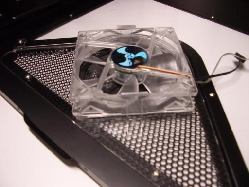 Keep pushing until both fan holders click into place.
Put the window side somewhere else; you won't need it for a while. Also unscrew the non-window side and put that somewhere else.
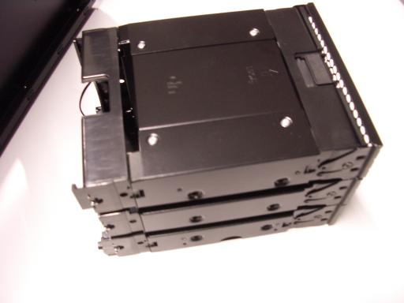 First drive cage. There are two drive cages, each occupying three slots at the front of the case. Unscrew the higher drive cage (eight thumbscrews) and gently push the cage out of the front of the case; don't let it drop.
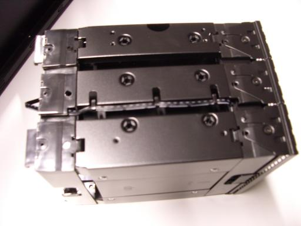 The drive cage has a front segment (holding a fan), a large middle segment, and a back segment. Find the metal tabs on the middle segment that hold the fan cable in place.
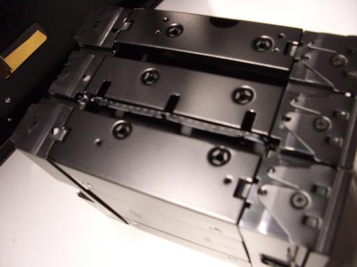 Unfold the tabs; I use a screwdriver to unfold the tabs partially and then raise them to 90 degrees by hand.
 Gently separate the fan cable from the back (this needs some sliding)
and middle segments.
Gently separate the fan cable from the back (this needs some sliding)
and middle segments.
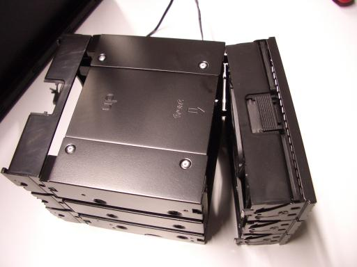 Unhook the front segment from the middle segment; this often takes some wiggling but does not require much force.
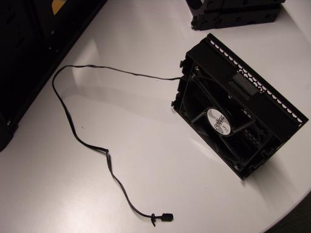 Put the middle and back segments into a spare-parts box; what will go back into the case later is just the fan.
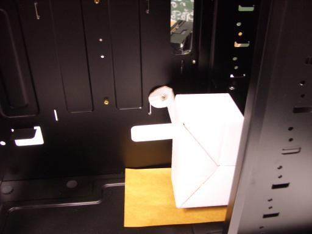 Second drive cage. There is a white box (containing many screws) inside the case.
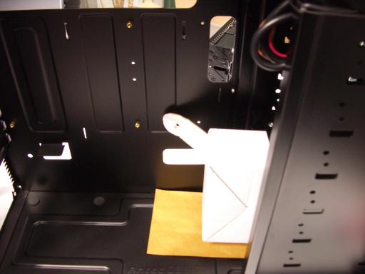 Unscrew this box from the case.
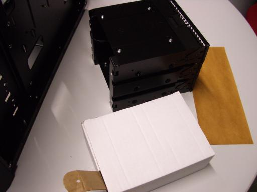 Unscrew the cage from the case (another eight thumbscrews). Gently push the cage and box out of the case.
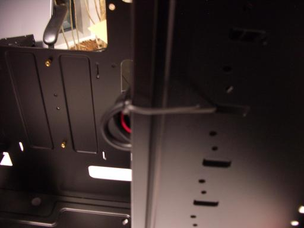 Remove the cables inside the case from the white plastic loop that contains them; if the loop is not solidly glued to the case, simply remove it and discard it. Also remove any further twist ties from the case.
Other front slots. The three remaining front slots in the case are occupied by separate slot covers. Unscrew these covers.
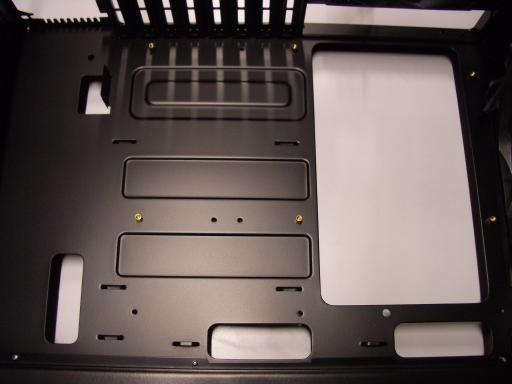 Motherboard standoffs. Put the case on its side and gently pull cables out of the way. The motherboard will screw into nine brass standoffs that screw into the case. Normally six of these standoffs are already installed in the case.
 Check that these standoffs are tight.
Find the remaining standoffs and screws in the white box.
Beware that the screws have threads with two different pitches
(distances between the threads):
Check that these standoffs are tight.
Find the remaining standoffs and screws in the white box.
Beware that the screws have threads with two different pitches
(distances between the threads):
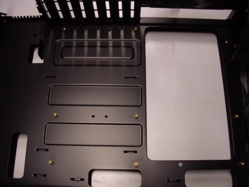 Double-check that you can screw the nine short screws that you've selected into the uninstalled standoffs. Take them out of the standoffs and install the standoffs into the case.
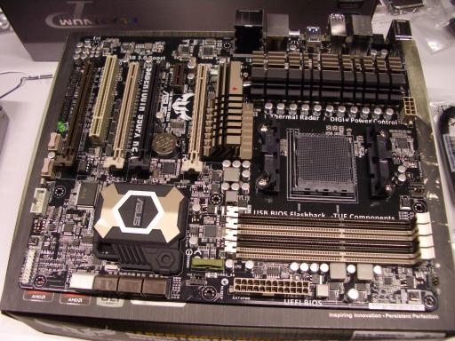 RAM. Remove the motherboard from its box. Rest it flat on the outside of the box, or on some other piece of cardboard. There are four DIMM slots on the motherboard, each with a white tab at one end. (The other end has just a slot, not a tab; this is one of very few things that I don't like about this motherboard.) Remove and discard the very thin flexible plastic protector from the Asus logo.
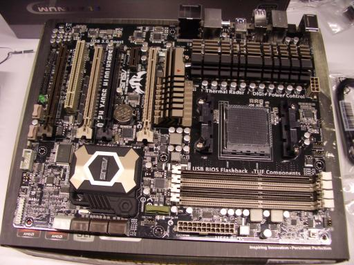 Flip the tabs open.
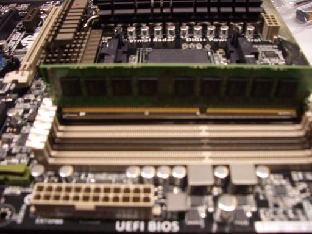 Slide a DIMM into one of the slots, making sure that the notch at the bottom of the DIMM is properly aligned.
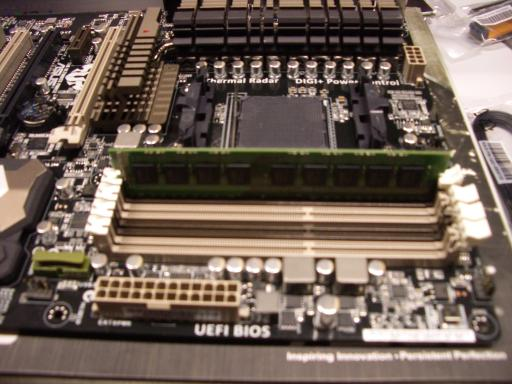 Push gently straight down on the DIMM until you meet resistance; the DIMM is close to seated at this point. Push slightly harder straight down on the non-tab end of the DIMM until you hear a click. Then push straight down on the tab end until the tab clicks into place.
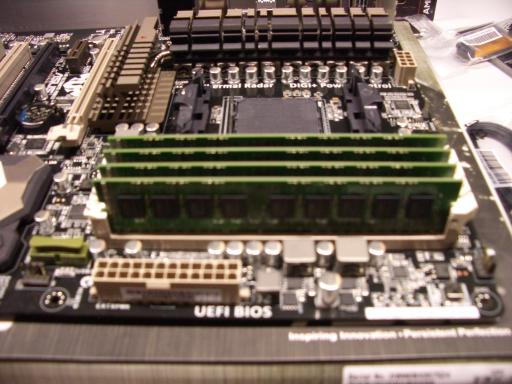 Repeat for the other DIMMs.
CPU. 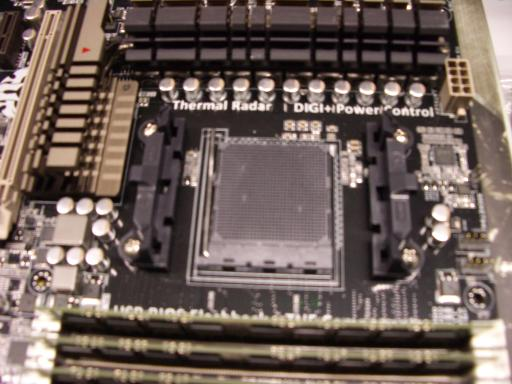 The CPU socket has a metal lever.
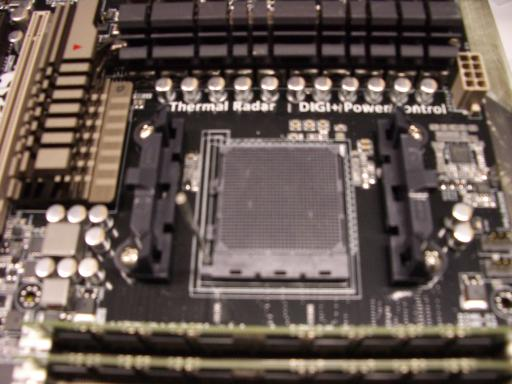 Raise this lever to vertical.
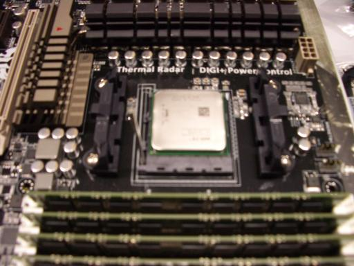 Place the CPU gently into the socket, with the triangles at matching corners; this does not require any force. Look at all sides of the CPU to make sure the CPU is flat, all the way in the socket.
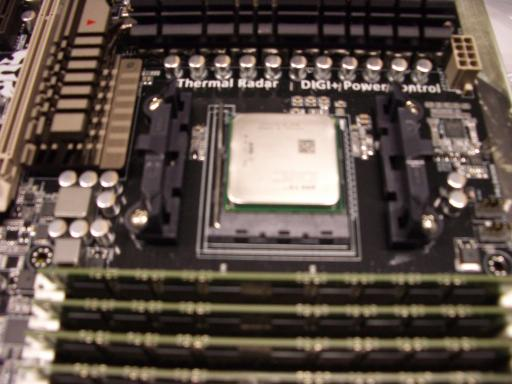 Put the lever back into place.
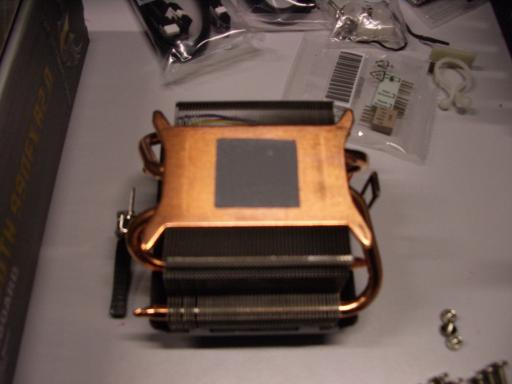 CPU heat sink and fan. Remove the plastic cover from the CPU heat sink.
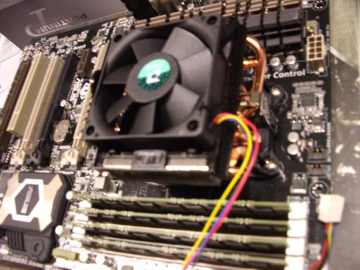 Don't touch the gray material (thermal pad). Check that the thermal pad is evenly covering a centered square of almost the same size as the CPU. Place the heat sink on top of the CPU, with fan cable towards the top of the motherboard (meaning the side that will end up at the top once the computer is done; this is the same side closest to the DIMM tabs). Hook the silvery metal that slides through the heat sink into place towards the top of the motherboard; this might require unhooking the silvery metal at the bottom.
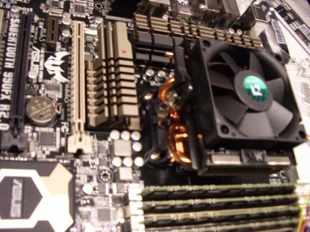 Hook the other end of the silvery metal into place at the bottom; this requires some force, and requires the black lever pointing in the correct direction.
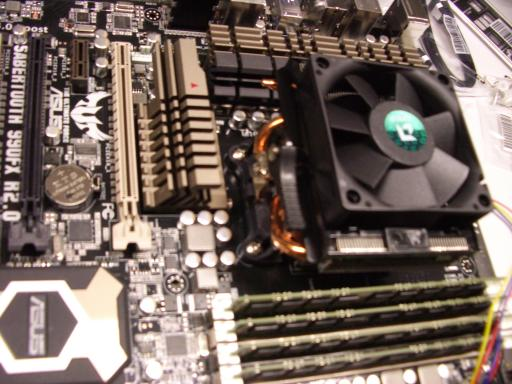 Once both sides are hooked, rotate the lever to the opposite position; this does not require quite as much force.
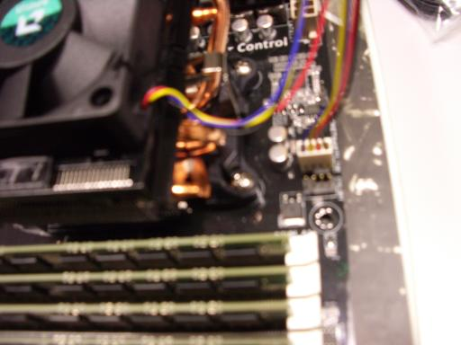 Plug in the fan cable.
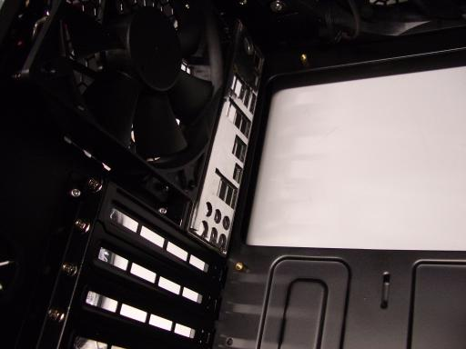 Motherboard. Push the motherboard I/O shield into the case so that the holes will align with the plugs in the motherboard. The cover needs to latch at all four corners; this requires some force. I use the back end of a screwdriver to push so that my fingers stay away from sharp edges at the back of the case. I start with the top of the I/O shield (corner of the case) and finish with the bottom (audio plugs). There is an audible thump when a corner latches, but beware that latching one corner can push another corner out of place.
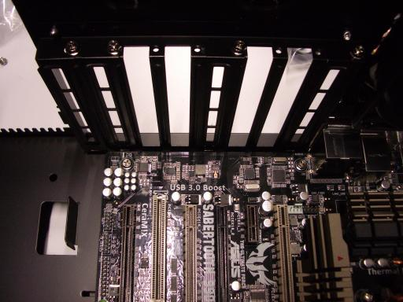 Unscrew and remove the second (counting from the top), third, fifth, and sixth slots from the case. There are many sharp edges here; be careful not to slice your fingers. When I took pictures I did this after the next step (putting the motherboard into the case), but doing it before is better.
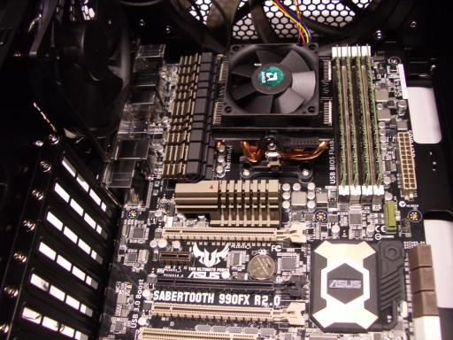 Pick up the motherboard by the built-in heat sinks (which are solidly attached), not by the CPU heat sink. Gently lower the motherboard into place inside the case, and slide it into the I/O shield. You should be able to see the standoffs through the screw holes in the motherboard, and when you slide the motherboard into the I/O shield the screw holes should line up perfectly with the standoffs, although if you stop pushing the motherboard towards the I/O shield then the foam in the I/O shield might push back a bit.
Use the nine screws you selected before to attach the motherboard to the standoffs, without tightening. Then tighten all nine screws.
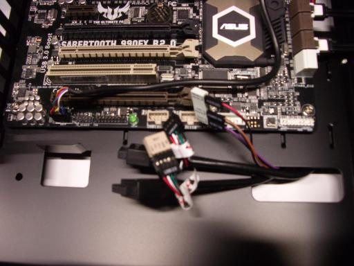 Cables. Most of the cables inside the case are long enough to run through the non-window side of the case, except for the audio (AAFP) cable. Run this cable in front of the motherboard past the SATA bank (it will end up below the two graphics cards); turn it near the bottom of the motherboard; and plug it in.
Plug in the USB cables as follows:
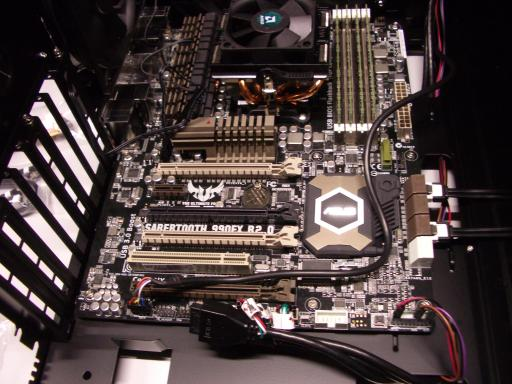 Plug the reset/power/HDD cables into the small white reset/power/HDD extender; the "RESET SW" and "POWER SW" and "H.D.D. LED" labels should be on the same side as the corresponding labels on the extender, and the black cables should line up with "ground" on the extender. Plug the extender into the motherboard.
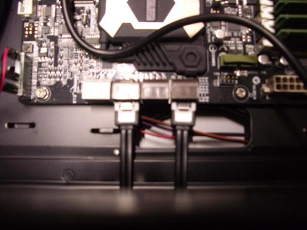 Also plug in two SATA data cables. I normally use the contents of one SATA data-cable bag, with one cable from a straight connector (motherboard end) to a right-angle connector, and the other cable from a straight connector to a straight connector.
There are two fan cables inside the case, one for the top fan and one for the rear fan. Attach these cables to the motherboard. There are several open fan connectors on the motherboard: CHA FAN1, CHA FAN2, CHA FAN3, CHA FAN4, and CPU OPT. For these two fans I use the fan connectors closer to the motherboard I/O shield. The fan connectors have four pins, while these cables use only three; there's a slot on each connector forcing the cable to attach to the correct three pins. (These three pins provide power and report fan speed to the motherboard. The other pin is used for the CPU fan and allows the motherboard to control the speed of that fan.)
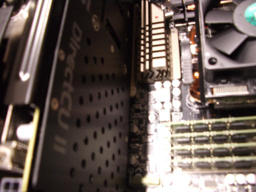 Graphics cards. The motherboard has four PCI Express slots, two beige and two brown. Open the two beige slots by pushing their levers down. Remove all plastic covers from one graphics card (I removed five hard blue plastic caps and one flexible plastic sheet). Plug this graphics card into the top PCI Express slot; don't squeeze any cables.
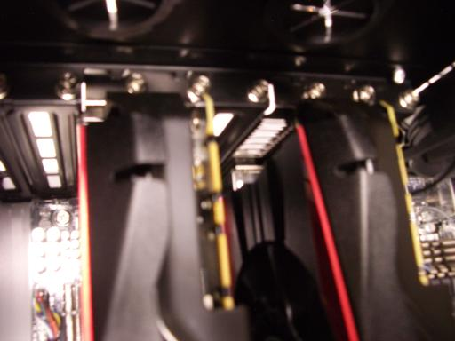 Screw the graphics card into the case. Similarly plug the second card in and screw it in.
Power supply. Plug power cables into the power supply. You'll need the following cables:
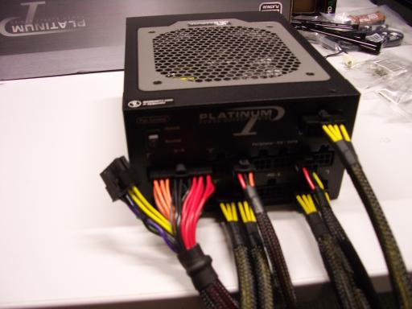 Make sure that each cable has solidly clicked into place.
Put the power supply into the corner of the case while holding cables as follows:
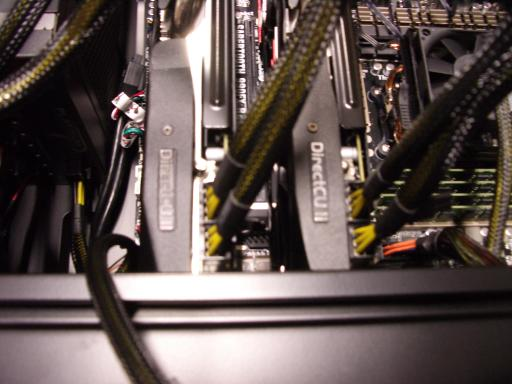 Take a pair of PCI Express power cables connected to the same position in the power supply, and attach those power cables to the bottom graphics card. Each cable has a 4x2 connector separated into a 3x2 and a 1x2; the graphics card needs one 4x2 and one 3x2. (This particular power supply is "single rail" so mixing cables from different positions would be safe, but taking cables from the same position is better practice.) Repeat with the other graphics card.
Tuck the PCI Express cables away at the bottom of the case.
 Plug the CPU power cable into the motherboard.
I thread this cable through the CPU fan cable to keep the CPU fan cable
out of the top case fan;
you can also add a twist tie at this point to be sure.
Plug the CPU power cable into the motherboard.
I thread this cable through the CPU fan cable to keep the CPU fan cable
out of the top case fan;
you can also add a twist tie at this point to be sure.
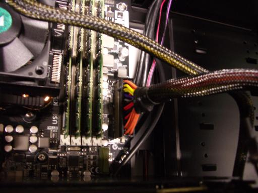 Plug the motherboard power cable into the motherboard.
There are still two power cables unattached at this point: the SATA power cables and the fan power cable. Rotate the computer back onto its feet, being careful not to squeeze these cables. Use four screws to screw the power supply into the case, after sliding the power supply at the bottom of the case so that screw holes are aligned.
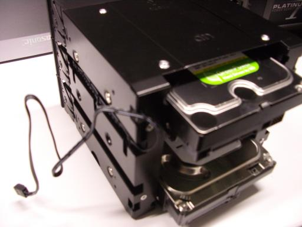 Hard drives. Slide the hard drives into the top and bottom slots of the remaining drive cage, making sure that the SATA connectors are visible out the back of the cage. Use eight long screws to screw the hard drives into the cage.
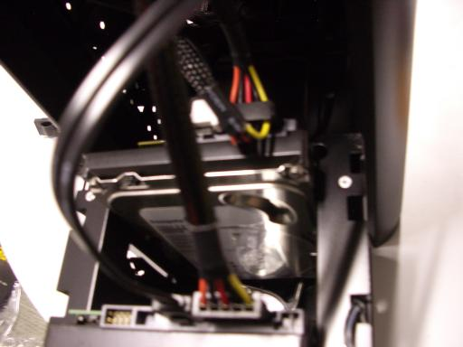 Put the drive cage at the front of the case (front meaning, as always, the side where you removed the drive cages earlier). Don't push on the blue button sticking out of the cage. Plug one SATA data cable into each drive; I use the right-angle connector for the bottom drive. Plug one SATA power cable into each drive; I typically use the last of the three connectors (farthest from the power supply) for the bottom drive and the next connector for the top drive.
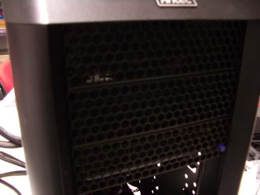 Funnel the fan cable from the drive cage into the case and hold that cable with your left hand. Use your right hand to slide the drive cage into the top three slots in the case. If you meet any resistance, figure out which cables are in the way, get them out of the way, and try again.
Screw the drive cage into place, but don't tighten the screws yet; I use four thumbscrews on each side. Slide the fan into the next three slots in the case, again funneling the fan cable into the case. Screw the fan into place, but don't tighten the screws yet; I use two thumbscrews on each side. Fill the three remaining slots. (I put the air gap at the bottom but don't know if this is best.)
Tighten all the screws.
Remaining fan cables. Put the case on its side. There are two unattached fan cables, one from the drive cage and one from the fan below the drive cage. Attach these two fan cables to the motherboard using any two out of the remaining three fan connectors on the motherboard.
Closing the case. Put the case on its feet. Attach the fan on the side window to a power connector. Check that all cables are plugged in and that everything is screwed into place.
Add twist ties to keep cables in reasonable positions. Close the window side of the case; if the cables are in reasonable positions then this won't require any force. Close the other side of the case.
After downloading ubuntu-13.10-server-amd64.iso to my laptop I created a bootable USB stick as follows. There's also a usb-creator-gtk command, but in my experience it's somewhat flaky.
DEVICE=sdb
ISO=ubuntu-13.10-server-amd64.iso
cat /sys/block/$DEVICE/device/{vendor,model}
# check that this matches the USB stick; $DEVICE will be wiped
parted -s /dev/$DEVICE mklabel msdos
( echo '0,,c,*'; echo ';'; echo ';'; echo ';' ) | sfdisk /dev/$DEVICE
partprobe
sleep 1
mkfs.vfat /dev/${DEVICE}1
fsck.msdos /dev/${DEVICE}1
dd if=/usr/lib/syslinux/mbr.bin of=/dev/$DEVICE
syslinux /dev/${DEVICE}1
mkdir -p /root/usb /root/iso
mount -t vfat /dev/${DEVICE}1 /root/usb
mount -o ro,loop "$ISO" /root/iso
time rsync -ah /root/iso/ /root/usb/
mv /root/usb/isolinux /root/usb/syslinux
mv /root/usb/syslinux/isolinux.cfg /root/usb/syslinux/syslinux.cfg
umount /root/iso
umount /root/usb
rmdir /root/iso /root/usb
parted /dev/$DEVICE set 1 boot on
Back to the new computer. Double-check that the case is safely closed, with no cables sticking out anywhere that you might touch them. Plug a USB keyboard into a USB 3.0 connector (blue) at the back of the computer. (There's a bug in the Ubuntu server installation that prevents installation using keyboards plugged in via USB 2.0 connectors.) Plug a monitor into the top DVI slot. (This slot works smoothly with the BIOS and with the OS installation.) Plug the AC power cable that came with the power supply into the computer and the wall. Flip the power switch from 0 to 1.
Turn the computer on by pushing the large round power button on the front, while watching the CPU fan through the side of the case. If the CPU fan doesn't spin up, or if there are any weird noises:
Also check that the other fans (two front, one top, one back, one side) are spinning. Increase speed by moving the switches on the back of the case from L to H and by rotating the blue buttons on the front of the case to the right.
Now check the monitor. The monitor should show an Asus boot screen.
Press Del to enter BIOS Setup. Select Advanced, and then Advanced again, to switch from the EZ screen to the Advanced screen. Use Monitor to watch the CPU temperature (which will increase slightly as the computer runs; around 40 C is normal) and the fan speeds (around 700 for the top fan, around 1900 for the two front fans, around 1900 for the rear fan, and 2400 or more for the CPU fan). Select the following options:
Also insert Ubuntu 13.10 server installation USB stick. Push F10 to save the BIOS options and reboot. After reboot, press Del again to reenter BIOS Setup.
Plug the computer into the Internet (I use NAT on my laptop) via Ethernet. Make sure that you've booted into BIOS Setup. Select Boot/Boot Override/JetFlash Transcend 4GB (or whatever your USB stick is), not the UEFI version. If you accidentally select the UEFI version, or skip BIOS Setup and automatically boot into the UEFI version, simply reboot and try again. If you didn't insert the USB stick before booting, simply insert it and try again.
"Language: English." Press Enter.
"Install Ubuntu Server." Press Enter.
"Select a language: English." Press Enter.
"Select your location: United States." Choose appropriately.
"Configure locales: United States." Press Enter.
"Configure the keyboard: Detect keyboard layout? No" Press Enter.
"Configure the keyboard: English (US)." Press Enter.
"Configure the keyboard: Keyboard layout." Choose appropriately.
"Configure the network: Hostname:" Type host name. (If network configuration fails because you didn't plug in a network cable, don't try reconfiguring it; the reconfiguration runs into installation bugs. Plug in a network cable, reboot, enter BIOS again, boot non-UEFI again, and restart the installation.)
"Set up users and passwords: Full name for the new user:" Type name and press Enter.
"Set up users and passwords: Username for your account:" Adjust as desired and press Enter.
"Set up users and passwords: Choose a password for the new user:" Type password and press Enter. Type password again and press Enter.
"Set up users and passwords: Encrypt your home directory? No" Press Enter.
"Configure the clock: Is this time zone correct? Yes" Press Enter.
"Partition disks" Select "Manual".
"Partition disks: This is an overview" Select "sda".
"Partition disks: Create new empty partition table on this device?" Select "Yes".
"Partition disks: This is an overview" Select first "FREE SPACE".
"Partition disks: How to use this free space: Create a new partition" Press Enter.
"Partition disks: New partition size:" Delete suggested size, type "98%", and press Enter.
"Partition disks: Type for the new partition: Primary" Press Enter.
"Partition disks: Location for the new partition: Beginning" Press Enter.
"Partition disks: Partition settings: Use as" Press Enter.
"Partition disks: How to use this partition:" Select "physical volume for RAID".
"Partition disks: Partition settings:" Select "Bootable flag:".
"Partition disks: Partition settings: Bootable flag: on" Select "Done setting up the partition".
"Partition disks: This is an overview" Select first "FREE SPACE".
"Partition disks: How to use this free space: Create a new partition" Press Enter.
"Partition disks: New partition size: 40.0 GB" Press Enter.
"Partition disks: Type for the new partition: Logical" Select "Primary".
"Partition disks: Partition settings: Use as" Press Enter.
"Partition disks: How to use this partition: physical volume for RAID" Press Enter.
"Partition disks: Partition settings:" Select "Done setting up the partition".
Repeat for "sdb".
"Partition disks: This is an overview" Double-check configuration:
Select "Configure software RAID".
"Partition disks: Write the changes to the storage devices and configure RAID?" Select "Yes".
"Partition disks: Software RAID configuration actions: Create MD device" Press Enter.
"Partition disks: Software RAID device type:" Select "RAID1".
"Partition disks: Number of active devices for the RAID1 array: 2" Press Enter.
"Partition disks: Number of spare devices for the RAID1 array: 0" Press Enter.
"Partition disks: Active devices for the RAID1 array:" Select "/dev/sda1" and "/dev/sdb1" and then "Continue".
"Partition disks: Software RAID configuration actions: Create MD device" Press Enter.
"Partition disks: Software RAID device type: RAID1" Press Enter.
"Partition disks: Number of active devices for the RAID1 array: 2" Press Enter.
"Partition disks: Number of spare devices for the RAID1 array: 0" Press Enter.
"Partition disks: Active devices for the RAID1 array:" Select "/dev/sda2" and "/dev/sdb2" and then "Continue".
"Partition disks: Software RAID configuration actions" Select "Finish".
"Partition disks: This is an overview" Select "#1 2.0 TB" (under "RAID1 device #0").
"Partition disks: Partition settings:" Select "Use as".
"Partition disks: How to use this partition:" Select "Ext3 journaling file system".
"Partition disks: Partition settings:" Select "Mount point".
"Partition disks: Mount point for this partition:" Select "/ - the root file system".
"Partition disks: Partition settings:" Select "Mount options".
"Partition disks: Mount options:" Select "noatime" and then "Continue".
"Partition disks: Partition settings:" Select "Done setting up the partition".
"Partition disks: This is an overview" Select "#1 40.0 GB" (under "RAID1 device #1").
"Partition disks: Partition settings:" Select "Use as".
"Partition disks: How to use this partition:" Select "swap area".
"Partition disks: Partition settings:" Select "Done setting up the partition".
"Partition disks: This is an overview" Double-check configuration:
Select "Finish partitioning and write changes to disk."
"Partition disks: Do you want to boot your system if your RAID becomes degraded?" Select "Yes".
"Partition disks: Write the changes to disks?" Select "Yes".
"Partitions formatting: Creating ext3 file system for / in partition #1 of RAID1 device #0..." [roughly 10 minutes] "Installing the system..." [roughly 1 minute] "Configure the package manager: HTTP proxy information" Press Enter.
"Select and install software" [roughly 2 minutes] "Configuring tasksel: No automatic updates" Press Enter.
"Choose software to install:" Select "OpenSSH server" and then "Continue".
"Select and install software" [roughly 5 minutes] "Installing GRUB boot loader" [a few seconds] "Install the GRUB boot loader on a hard disk: Install the GRUB boot loader to the master boot record? Yes" Press Enter.
"Finish the installation: Installation complete: Continue" It's good practice (although not essential) to let the computer sit running for several hours at this point so that it can finish synchronizing the RAID disks. When this is done, the blue disk-access light on the front of the computer will turn off and stay off. Then press Enter. When screen goes black, quickly remove USB stick.
After reboot the system is running an ssh server, so I log in from my laptop.
aptitude purge \
network-manager network-manager-gnome \
avahi-daemon libnss-mdns avahi-utils telepathy-salut \
apt-xapian-index mlocate \
-y
update-rc.d ondemand disable
# core Ubuntu drivers are too old for GTX 780 so use xorg-edgers:
add-apt-repository ppa:xorg-edgers/ppa
# press Enter
aptitude update
aptitude dist-upgrade -y
aptitude install \
ntp acpi lm-sensors git subversion unison vim openssh-server \
build-essential clang m4 gcc-multilib valgrind libssl-dev \
libcr-dev mpich2 mpich2-doc gcc-4.6 g++-4.6 gfortran gfortran-4.6 \
libX11-dev libglu1-mesa libXi-dev libXmu-dev freeglut3-dev dc \
-y
# NVIDIA tools can't handle gcc 4.8 so switch to gcc 4.6:
update-alternatives --install /usr/bin/gcc gcc /usr/bin/gcc-4.8 40
update-alternatives --install /usr/bin/gcc gcc /usr/bin/gcc-4.6 60
update-alternatives --install /usr/bin/g++ g++ /usr/bin/g++-4.8 40
update-alternatives --install /usr/bin/g++ g++ /usr/bin/g++-4.6 60
update-alternatives --install /usr/bin/gfortran gfortran /usr/bin/gfortran-4.8 40
update-alternatives --install /usr/bin/gfortran gfortran /usr/bin/gfortran-4.6 60
chmod 755 /etc/rc.local
# xorg-edgers doesn't have nvidia-latest so select driver manually:
aptitude install \
nvidia-331 nvidia-cuda-doc nvidia-cuda-dev nvidia-cuda-gdb \
-y
# and default libopencl is broken so switch to a backup:
aptitude remove nvidia-libopencl1-331
aptitude install ocl-icd-opencl-dev nvidia-cuda-toolkit -y
vi /etc/rc.local
# add to /etc/rc.local before "exit 0":
# set +e
# mknod /dev/nvidia0 c 195 0; chmod 666 /dev/nvidia0
# mknod /dev/nvidia1 c 195 1; chmod 666 /dev/nvidia1
# modprobe nvidia_331
reboot
Log in again.
nvidia-smi
# should show two graphics cards
wget http://wili.cc/blog/entries/gpu-burn/gpu_burn-0.4.tar.gz
mkdir gpu_burn
cd gpu_burn
tar -xf ../gpu_burn-0.4.tar.gz
nvcc -arch=compute_13 -ptx compare.cu -o compare.ptx
g++ -O3 -c gpu_burn-drv.cpp
g++ -O3 -o gpu_burn gpu_burn-drv.o -lcuda -lcublas -lcudart -o gpu_burn
./gpu_burn 600
I also went through my usual server-configuration routine: adding various extra packages, setting up a better login mechanism, telling the system not to start sshd, etc. There are also many choices of cluster filesystems and queueing systems, and maybe I'll say more about those in subsequent blog posts.
A subsequent xorg-edgers upgrade turned out to break CUDA programs. First step of the fix:
aptitude install nvidia-331-uvm
This failed (on 2014.04.11 and on 2014.05.01 and on 2014.06.02), producing the error message "Error! Application of patch buildfix_kernel_3.12.patch failed", because of a bug in the nvidia-331-uvm package. Second step, to fix the bug, replace the contents of /usr/src/nvidia-331-uvm-331.*/patches/buildfix_kernel_3.12.patch with the following:
diff --git a/nvidia_uvm_linux.h b/nvidia_uvm_linux.h
index e2b4620..0a38cbc 100644
--- a/nvidia_uvm_linux.h
+++ b/nvidia_uvm_linux.h
@@ -389,11 +389,17 @@ typedef void irqreturn_t;
// not require the RCU's read lock on current->cred.
//
//
+#ifdef CONFIG_UIDGID_STRICT_TYPE_CHECKS
+#define NV_KUID_TO_UID(value) (__kuid_val(value))
+#else
+#define NV_KUID_TO_UID(value) (value)
+#endif
+
#if defined(NV_TASK_STRUCT_HAS_CRED)
-#define NV_CURRENT_EUID() (__kuid_val(current->cred->euid))
+#define NV_CURRENT_EUID() NV_KUID_TO_UID(__kuid_val(current->cred->euid))
#else
-#define NV_CURRENT_EUID() (__kuid_val(current->euid))
+#define NV_CURRENT_EUID() NV_KUID_TO_UID(__kuid_val(current->euid))
#endif
#if !defined(NV_KUID_T_PRESENT)
Third step, to finish fixing the failure:
dpkg-reconfigure nvidia-331-uvm
Fourth step: Add two more lines to /etc/rc.local:
mknod /dev/nvidia-uvm c 251 0; chmod 666 /dev/nvidia-uvm
modprobe nvidia-331-uvm
Fifth step: Reboot.
{kind=link}
{kind=link}
{kind=link}
{kind=link}
{kind=link}
{kind=link}
{kind=link}
{kind=link}
{kind=link}
{kind=link}
{kind=link}
{kind=link}
{kind=link}
{kind=link}
{kind=link}
{kind=link}
{kind=link}
{kind=link}
{kind=link}
{kind=link}
{kind=link}
{kind=link}
{kind=link}
{kind=link}
{kind=link}
{kind=link}
{kind=link}
{kind=link}
{kind=link}
{kind=link}
{kind=link}
{kind=link}
{kind=link}
{kind=link}
{kind=link}
{kind=link}
{kind=link}
{kind=link}
{kind=link}
{kind=link}
{kind=link}
{kind=link}
{kind=link}
{kind=link}
{kind=link}
{kind=link}
{kind=link}
{kind=link}
{kind=link}
{kind=link}
{kind=link}
{kind=link}
{kind=link}